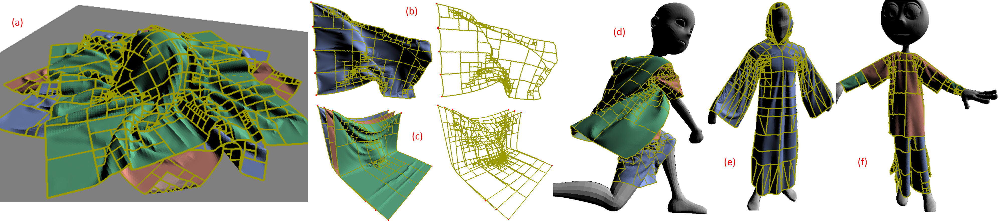

1 - Zhejiang University, China
2 - University of North Carolina at Chapel Hill, USA
3 - Alibaba-Zhejiang University Joint Institute of Frontier Technologies, China

Benchmarks: Our novel GPU-based collision detection algorithm is used to simulate clothes with regular (a-c) or irregular (d-f) shapes, which may correspond to a single layer (b, e) or multiple layers (a, c, d, f). We use a parallel spatial hashing algorithm to perform inter-object and intra-object collision checking on a GPU along with normal cone culling. The yellow line segments highlight all the areas that have no self-collisions and can be culled away. As compared to prior GPU-based collision detection algorithms, we observe 6−8X speedup.
Abstract
We present a GPU-based self-collision culling method (PSCC) based on a combination of normal cone culling and spatial hashing techniques.
We first describe a normal cone test front (NCTF) based parallel algorithm that maps well to GPU architectures. We use sprouting and shrinking operators to maintain compact NCTFs.
Moreover, we use the NCTF nodes to efficient build an enhanced spatial hashing for triangles meshes and use that for inter-object
and intra-object collisions. Compared with conventional spatial hashing, our approach provides higher culling efficiency and reduces
the cost of narrow phrase culling. As compared to prior GPU-based parallel collision detection algorithm, our approach
demonstrates 6?8X speedup. We also present an efficient approach for GPU-based cloth simulation based on PSCC. In practice, our
GPU-based cloth simulation takes about one second per frame on complex scenes with tens or hundreds of thousands of triangles, and
is about 4-6X faster than prior GPU-based simulation algorithms.
Paper (PDF 2.21 MB) I3D 2018 Slides (PDF 969 KB) Source Code
Min Tang, Zhongyuan Liu, Roufeng Tong, and Dinesh Manocha, PSCC: Parallel Self-Collision Culling with Spatial Hashing on GPUs, Proceedings of the ACM on Computer Graphics and Interactive Techniques, 1(1), 18:1-18, 2018.
@article{pscc18,
author = {Tang, Min and Liu, Zhongyuan and Tong, Ruofeng and Manocha, Dinesh},
title = {{PSCC}: Parallel Self-Collision Culling with Spatial Hashing on {GPUs}},
journal = {Proceedings of the ACM on Computer Graphics and Interactive Techniques},
volume = {1},
number = {1},
pages = {18:1--18},
year = {2018},
}
Video (22.9 MB)
I-Cloth: Incremental Collision Handling for GPU-Based Interactive Cloth Simulation
I-Cloth: API for fast and reliable cloth simulation with CUDA
PSCC: Parallel Self-Collision Culling with Spatial Hashing on GPUs
Accurate Self-Collision Detection Using Enhanced Dual-Cone Method
Efficient BVH-based Collision Detection Scheme with Ordering and Restructuring
CAMA: Contact-Aware Matrix Assembly with Unified Collision Handling for GPU-based Cloth Simulation
A GPU-based Streaming Algorithm for High-Resolution Cloth Simulation
UNC dynamic model benchmark repository
Collision-Streams: Fast GPU-based Collision Detection for Deformable Models
Fast Continuous Collision Detection using Deforming Non-Penetration Filters
MCCD: Multi-Core Collision Detection between Deformable Models using Front-Based Decomposition
Fast Collision Detection for Deformable Models using Representative-Triangles
DeformCD: Collision Detection between Deforming Objects
Self-CCD: Continuous Collision Detection for Deforming Objects
Interactive Collision Detection between Deformable Models using Chromatic Decomposition
Fast Proximity Computation Among Deformable Models using Discrete Voronoi Diagrams
CULLIDE: Interactive Collision Detection between Complex Models using Graphics Hardware
RCULLIDE: Fast and Reliable Collision Culling using Graphics Processors
Quick-CULLIDE: Efficient Inter- and Intra-Object Collision Culling using Graphics Hardware
This research is supported in part by the National Key R&D Program of China (2017YFB1002703), NSFC (61732015, 61572423, 61572424), the Science and Technology Project of Zhejiang Province (2018C01080), and Zhejiang Provincial NSFC (LZ16F020003). Dinesh Manocha is supported in part by the 1000 National Scholar Program of China and NSFC (61732015).